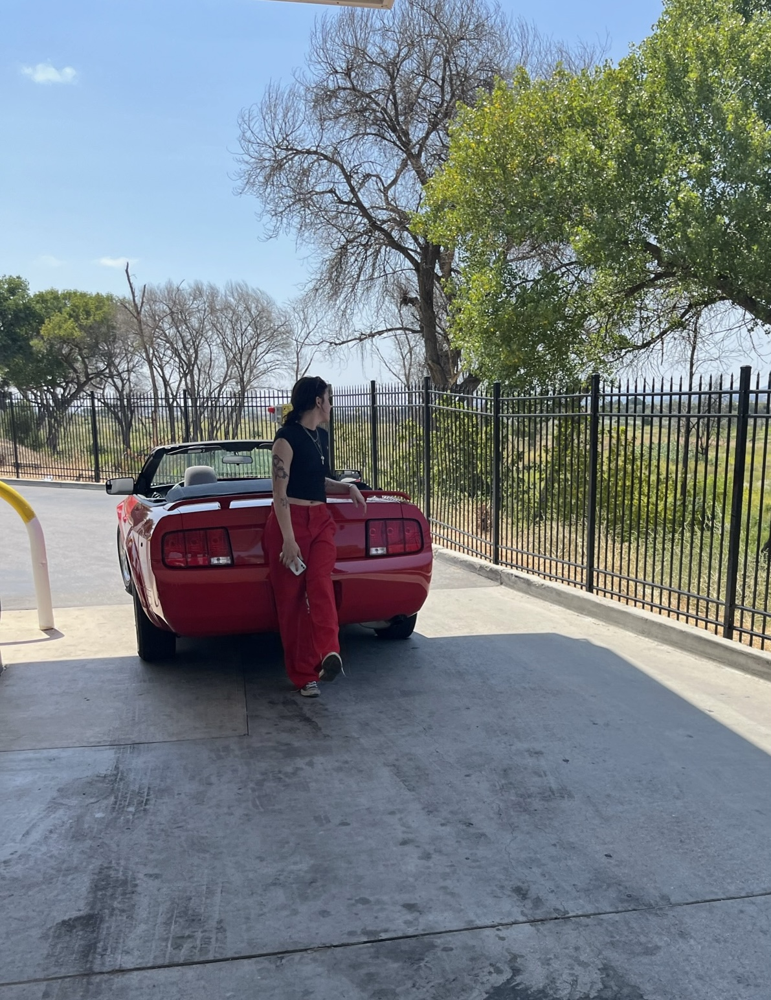

Lab 5 - Data Types and Variables
Challenge
This lab was pretty straight foreward, I was able to get all of my variables figured out pretty easily. Java Script is basically like one big calculator. If anything it took me a second to get used to the conventions but other than that I feel pretty good about it.
Results
you're looking at my index.html, here is my program execution:
Script Output
